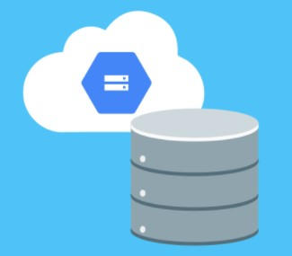

“It takes 20 years to build a reputation and few minutes of cyber-incident to ruin it.” – Stephane Nappo
- Cybersecurity Cost: 300$
-
How to setup and secure basic computer systems and networks, Information security risk management framework and methodologies, How to implement network security solutions and detect intrusions, How to conduct a digital forensics investigation admissible to a court,To practice cybersecurity skills in real world scenarios.
What you' ll learn:
- How to setup and secure basic computer systems and networks
- Information security risk management framework and methodologies
- How to implement network security solutions and detect intrusions
- How to conduct a digital forensics investigation admissible to a court
- To practice cybersecurity skills in real world scenarios
- Network Security Cost: 200$
-
How to setup and secure basic computer systems and networks, Information security risk management framework and methodologies, How to implement network security solutions and detect intrusions, How to conduct a digital forensics investigation admissible to a court,To practice cybersecurity skills in real world scenarios.
What you' ll learn:
- How to identify when attacks are happening inside networks
- How to collect evidence of network intrusions
- How to test networks and systems for vulnerabilities
- How to prepare for and defend against network attacks
 Network Security - Protocols Cost:
500$
Network Security - Protocols Cost:
500$ -
Learn more fundamentals of network security, including cryptographic algorithms used in networking protocols, TLS/SSL,IPSec Layer 2 Security and Wireless Security.
What you' ll learn:
- Define and apply a substitution cipher
- Define cryptanalysis
- Describe at least two strategies for breaking an encryption scheme
- Provide definitions of basic wireless terms
- Summarize WPA, WPA Enterprise, and generalized WiFi attacks
-  Basic Network and Database Security Cost:150$
-
Build a background needed to understand basic network security and learn how to safeguard your organization from cybersecurity attacks. In addition to network security, you will learn about different types of data including personal sensitive data and safeguarding your organization from a data breach.
What you' ll learn:
- Understand network basics around the TCP/IP and OSI Models.
- Describe the differences between IPS and IDS Systems.
- Understand IP addressing, network address translation and packet sniffing.
- Describe key characteristics of different data types and models.
- Discuss options for protecting your data.
 Jump Start - Cloud Security
Cost:50$
Jump Start - Cloud Security
Cost:50$-
Check Point CloudGuard, a comprehensive cloud security portfolio, is designed to prevent the latest fifth generation (Gen V),multi-vector cyberattacks targeting enterprise cloud services.
What you' ll learn:
- How to Secure your Cloud Environment.
- Understanding Cloud Security Fundamentals.
- Deploying a CloudGuard Network Security Solution.
 Network
Security
- Advanced Topics Cost: 1000$
Network
Security
- Advanced Topics Cost: 1000$-
Learn advanced topics in network security, including Security Monitoring, Perimeter Security, IPv6 and IPv6 Security.
What you' ll learn:
- Explain what information is collected and analyzed through network security monitoring, and why monitoring is important
- Describe common strategies attackers use to evade an IDS
- List the differences between DHCPv4 and DHCPv6
- Summarize the challenges that led to the development of IPv6 and explain how IPv6 addresses those challenges
- Define an Intrusion Detection System/Intrusion Prevention System, and provide a real-world analogy for an IDS